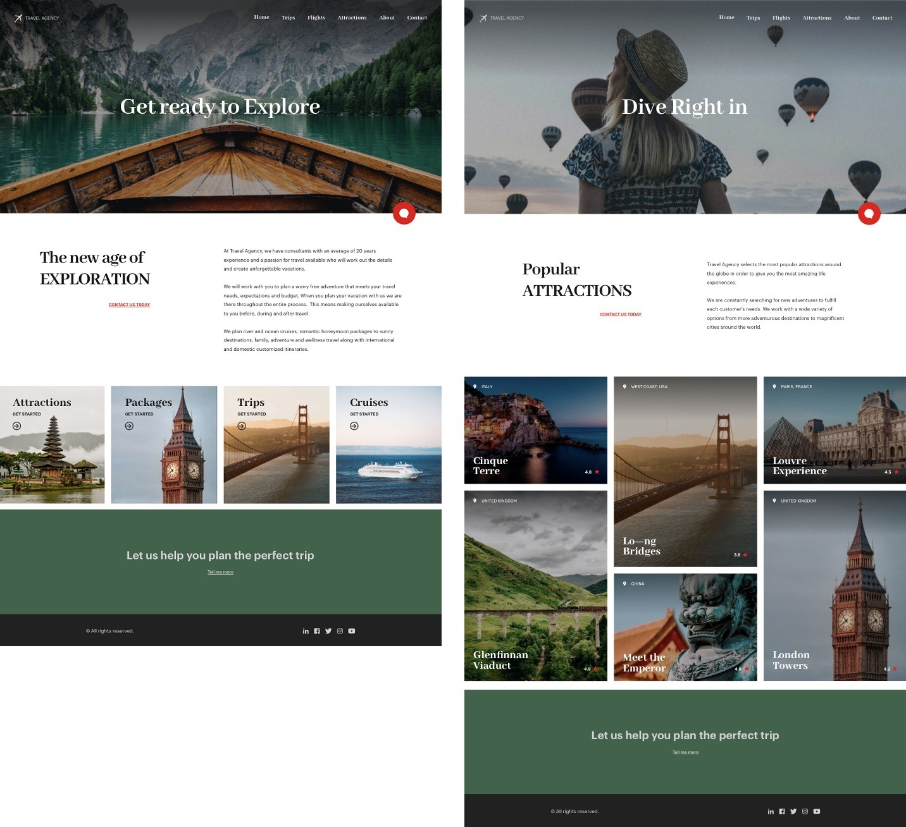

To this point, you have seen the case where the design team defined the design of the app’s first inter-related screens, with a manual shift from that design to GeneXus.

Developers used to have to create the necessary Web Panels, the Design System Object with its classes (even with the possibility of copying properties from the design file) and tokens, in addition to applying classes to controls and defining all other features for them.
Nevertheless, when the design is made on Sketch, GeneXus provides a tool to import it automatically, with nothing more than just some minimal adjustments. No need to create Web Panels, or controls, or the Design System Object, or the classes, for all this will be done automatically. All that is necessary will be the adjustment of what wasn’t duly imported (or even, in the case of design abstractions, it might be necessary to request the designer to modify the design and export it again). And of course, the encoding of the behavior, but on the already imported objects, so the work required comes down to a lot less.
A smoother working method between designers and developers will result in an increasingly automatic import of a design that will be immediately functional.
This is a point where communications between designer and developer become a significant aspect in what is considered an actual learning cycle for defining conventions to be applied towards optimizing the work of both, with the least inconveniences possible.
When an approval follows the back and forth process where the designer has done work on the two Travel Agency screens shown using the recommended conventions for grouping elements, defining color variables, styles, etc., then comes the time to import into GeneXus. The designer sets it up from Sketch, with a GeneXus add-in, that is, the .gxsketch file that is shared.
The only thing that must be done is to import it and check whether any adjustments are necessary.
The importing Sketch fixed data is loaded. In this case, for instance, it was the data on tourist attractions (photo, name and so on). Supposedly, the developer will change such fixed data to database data, in order to focus on his/her specific tasks, and the design will remain mostly in the hands of the designer.
Here is the file of Sketch for GeneXus that was used for the video. Bear in mind that the importing tool, as well as GeneXus, are subject to ongoing development. Therefore, depending on the time when you import the file, your results will be exactly as what you saw on the video, or not.
Since GeneXus 17 Upgrade 6.
| Backlinks |
| Toc:Design Systems |